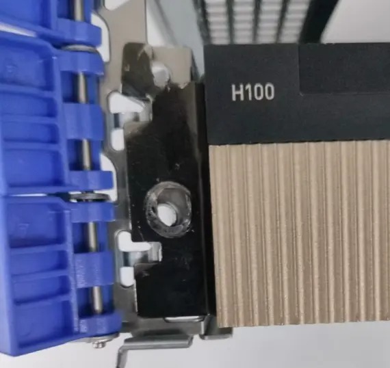
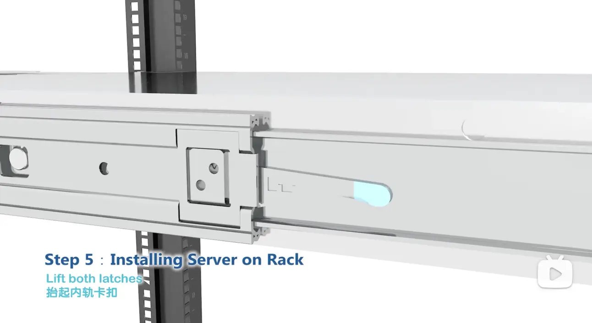
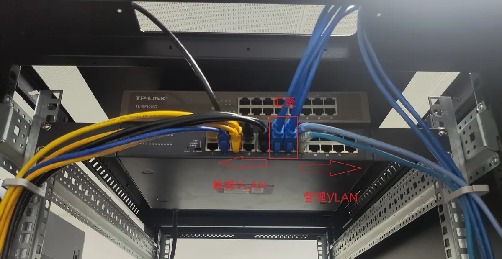

硬件运维¶
Abstract
本文档主要介绍硬件运维的注意事项和操作规范。硬件知识和设备说明书见其他文档。
目前，集群机房基础设施基本稳定，大部分运维任务已经可以通过远程方式完成。但我们仍然需要具备基础的硬件知识，并具备动手操作的能力：
- 每月会有一两次更换设备的需求
- 打比赛时需要自己组装集群
硬件运维需要仔细耐心，特别要注意避免硬件损坏。请爱惜设备。
注意事项¶
在进行硬件操作时，请务必遵循以下守则！
这些注意事项都是我们在运维过程中吃过的苦，请不要掉以轻心！
- 佩戴手套
- （暴论）不戴手套的人都是没被夹过或电过的。进入机房前请先佩戴手套（尤其是秋冬季节，注意静电危害！）。
- 既能保护自己的手不被机油、灰尘弄脏或被器件弄伤，也能保护硬件设备免受侵蚀和静电的危险。
- 例外：拆卸 CPU 时不应当佩戴手套，避免损坏插槽上的触点。
-
切勿随意乱丢零件
- 所有物资请用完放回原位，否则又会变得非常乱。
- 去机房之前带上零件盒。螺丝等各种小零件需要的时候极其难找。
- 拆卸零件时务必放置到零件盒中，或用密封袋装好并标记，避免日后丢失或混淆。

从服务器上拆卸线缆后用标签标记好 -
拍照记录
- 如果你对将要操作的内容不熟悉，请拍照记录原始状态，以便在操作失败时能够恢复。
- 对于线缆较多的情况这一点尤其重要！不要过于自信相信觉得一定能复原。
-
勿用蛮力
- 机房内陌生的接口和组件较多，它们往往有特定的插拔方式，不当操作可能导致硬件损坏。
-
用蛮力的结果 belike：
 用蛮力导致 PCIe 设备挂耳损坏无法安装
-
插好线之后，轻轻拉一下看看有没有插牢
- 有些网线很容易脱落，IB 线也可能插反。
-
有些电源线接口也会有松动：

电源线接口松动 -
PCIE 卡、网络、电源线接口都有指示灯，巡检时可以多留心一下指示灯的状态。
-
走线
- 参考 操作手册#机柜布局与理线，禁止乱飞。
- 非我们管理的机柜线缆可能很乱，只要没影响到我们就没事。如果他们飞线经过我们，就扔到机柜顶上去。
操作规范¶
服务器上/下架¶
服务器附件盒内一般有上架说明书，按照说明书操作。
服务器的导轨有几种类型：
- 托架式导轨：我们一般不使用。
-
抽拉式导轨：
-
导轨是分段的，抽出内轨后卡扣会自动锁住。根据卡扣的构造不同，需要按压/拉动卡扣才能将内轨推回。
 抽拉式导轨的内轨卡扣
根据内轨是否可拆卸，分为两种情况：
-
内轨可拆卸：先卸下内轨安装到服务器。然后将服务器与内轨一起推入外轨。参考 Dell PowerEdge R740 服务器卸载/安装混合导轨。
-
内轨不可拆卸：抬起服务器，将铆钉直接卡在内轨卡槽中。参考 浪潮英信服务器 NF5270M6 整机上架安装视频。

将铆钉卡在内轨卡槽中
-

{kind=link}
{kind=link}
{kind=link}
错误案例
曾经有没经验的同学来机房上架服务器，用导轨挂钩来承重。这是严重错误的，很容易导致挂钩断裂服务器掉落。


最好不要让没经验的人上架服务器，联络时一定要说清楚各项注意事项，把教程发给他们。
- 记得固定好导轨与服务器、导轨与机架的螺丝（如果有），避免抽拉时导轨脱架。
{kind=link}
机柜布局与理线¶
我们的机柜布局约定：
- 机柜顶部为 TOR（Top of Rack）交换机、InfiniBand 交换机等网络设备。
- 机柜底部为服务器，U 数越大、越重的设备应当越靠近底部。
- 为了方便维护，每台服务器之间至少保持 1U 的间隔，普通服务器上架高度不超过 30U。这意味着一个机柜可以承载约 10 台 2U 服务器。
一般的理线方式是利用机柜侧边的理线槽，将线缆梳理至机柜两侧。
{kind=link}
{kind=link}
我们的机柜没有预装理线槽，且有些位置被 PDU 占用，所以在机架上安装理线环，用于清理网线。
-
从最顶上的交换机开始，左侧是数据网络，右侧是管理网络。
 左数据，右管理 -
网线：使用理线槽梳理。过长的线裁剪打水晶头，或折叠后使用扎带绑好。
- 电源线：电源线不走理线槽。折叠后使用粗扎带绑好。电源在 PDU 上的顺序与在机架上的顺序应当一致。
{kind=link}
有些服务器带有理线臂，可以在不拆卸线缆的同时抽出服务器进行检查。
{kind=link}
但我们没有，也不预留长度，线都扎得比较紧，所以抽出服务器前必须检查所有线缆都已经卸除。